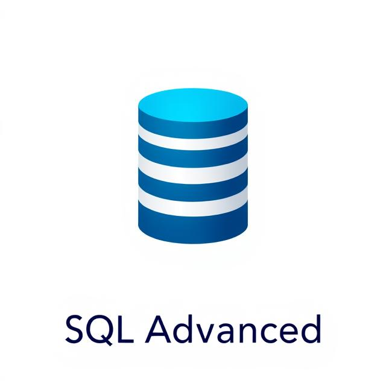
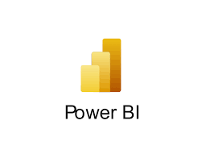

I am passionate about leveraging technology to drive strategic decision-making and innovation.
With a strong foundation in Information Systems and Data Analysis, I am dedicated to continually expanding my expertise to stay ahead in the ever-evolving tech landscape.
My goal is to use my skills to create impactful solutions and contribute to the success of organizations.

A new database called "Sales" was created by extracting and consolidating relevant data from the AdventureWorks2022 database.
Key entities such as SalesTerritory, SalesPerson, Customer, and Product were included.
This new database served as the foundation for conducting research queries, focusing on sales trends, customer behavior, and product performance analysis.
This Python-based project focuses on an in-depth analysis of SuperStore sales data to uncover actionable business insights across profitability, geography, customer segments, shipping performance, and product categories. Leveraging pandas, matplotlib, seaborn, and Jupyter Notebook, the project delivers data-driven recommendations to support strategic decision-making and improve overall business performance.

This project explores the Wide World Importers database, simulating a global wholesale distributor.
It involves creating advanced SQL queries to analyze sales data, customer behavior, product performance, and more.
Key tasks include calculating growth rates, ranking customers, identifying top products, and assessing supplier distribution.
The project leverages advanced SQL techniques like window functions, aggregation, and pivoting to generate valuable business insights.

The HR Dashboard, created in Tableau, provides an overview of the total workforce with headcount breakdowns by department and location. It includes visualizations for gender, age, and tenure distribution across different sites, along with customizable filters for age group, education level, department, job title, location, and salary. The dashboard allows detailed employee distribution insights based on department, job title, and other demographic factors.

Business Insights is a Power BI project designed to provide a clear, centralized view of key organizational metrics across Sales, Customer Engagement, Product & Inventory, and HR. This interactive dashboard empowers decision-makers with real-time data, enabling them to track performance, uncover trends, and drive strategic action. By consolidating essential KPIs into one intuitive interface, Business Insights supports smarter, faster, and more informed business decisions at every level.